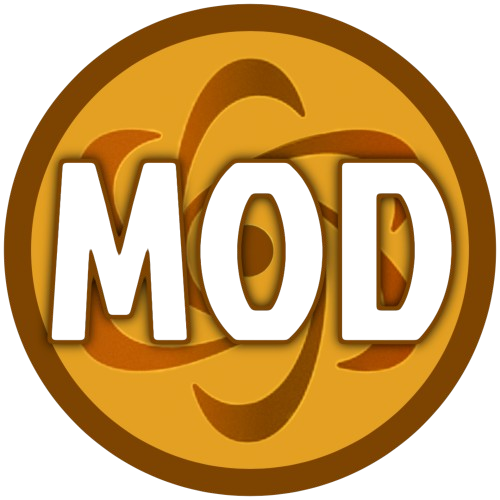
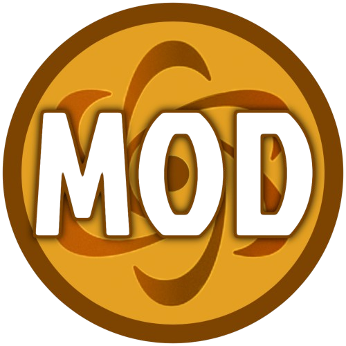
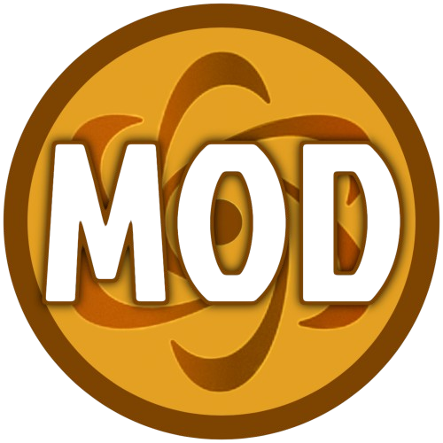
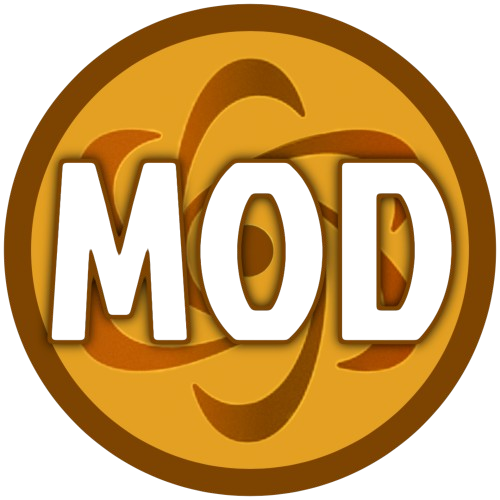

Game Moderators handle the game side of moderation. They get the cool yellow role in the discord, moderator role in the group, and access to the Administrator team in game.
In order to apply for GM, you have to be in the discord and meet the requirements given.
The applications are currently: Not Open.
Dont forget handpicks happen often! To be handpicked you need to be active and show that you know how to moderate and enforce rules (WITHOUT MINIMODDING!!!)